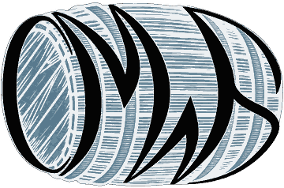

What is CMWS?
A Czech society built around private-cask whisky.
CMWS was established in 2018 after a joint private-cask project showed how much more whisky enthusiasts could achieve by working together.
How it started
From one shared cask project to CMWS
CMWS grew out of a very practical idea.
A typical whisky cask yields 300 bottles or more. For a single club, that is a lot to handle. By joining forces, several clubs could share the bottles, distribute them more quickly and make private-cask projects much easier to realise.
But it was never only about logistics. We also wanted to enjoy these casks with a broader circle of whisky enthusiasts, rather than keep them within individual clubs.
What started as cooperation around a shared bottling developed into CMWS in 2018 — a common platform for private-cask projects across Czechia and beyond.

Behind the CMWS logo
The idea for the CMWS logo came from one of our members: take the letters “CMWS” and wrap them around the shape of a whisky cask.
What began as a simple visual idea gradually developed into the logo we use today.
An early visualization of the idea behind the CMWS logo.
What we do
Private bottlings, selected with care
Today, CMWS focuses on finding and selecting distinctive private-cask bottlings of Scotch whisky.
We work directly with distilleries, discussing available casks and selecting those we believe are worth sharing with the wider CMWS community.
Since 2022, we have concentrated on mature whisky that is ready for direct bottling, rather than buying younger casks for long-term maturation. We simply want to avoid the wait-and-wonder approach, with no certainty about the final liquid.
The process is deliberately hands-on: from the first contact with a distillery through cask selection and acquisition to bottling and the final local introduction of the whisky to our clubs and members.
CMWS today
A network built around shared whisky projects
CMWS today is a network of whisky clubs and enthusiasts connected by a shared interest in distinctive whisky and private-cask projects.
The participating clubs remain independent, while CMWS provides the common platform for projects that benefit from working together.
The network reaches across Czechia and beyond, brought together through new collaborations, shared tastings and joint bottlings.
At its core, CMWS is still about the same idea it started with: enjoying interesting whisky together, and making projects possible that would be difficult to realise alone.